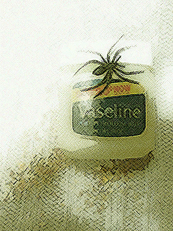

In Retrospect
by Kathryn Jacobs
Okay, you “meant well.” Even turkey grease
may “mean well.” Vaseline undoubtedly
has “good intentions.” But they’re sticky, folks –
and bland as birdseed. After “meaning well”
there’s only one word: “but.” Or say you “love.”
Well, so do spider-moms: they love so much
they’d smother you to keep you at their side.
As for surrender — sacrifice gets old.
It’s not enough to feel, folks. Meaning well
might keep you locked inside your lover’s skull,
Or set you free on ice slicks. Loving you
might cling like sticky sweaters in the sun.
Tell god your good intentions. Skip contrite.
There’s just no substitute for being right…

 |
|